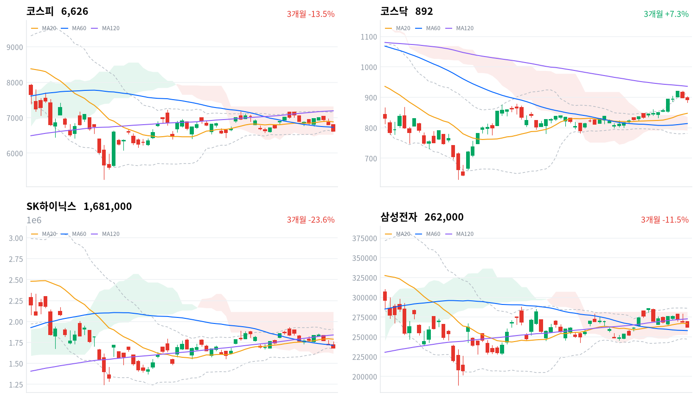

삼성전자가 기대 범위 안의 사상 최대 분기 실적을 낸 날, 옵션 만기와 반도체 ETF 리밸런싱이 겹치며 코스피가 하루 저가에서 끝났다. 매도는 메모리 대형주에 몰렸고 반도체 업종 안의 중소형주는 절반 넘게 올랐다.
우리는 오늘 하락을 실적보다 날짜가 정해진 수급 사건이 만든 매도로 본다. 한글날 휴장 뒤 10월 12일 외국인 매도가 다시 1조원을 넘는지가 이 판단을 가른다.
삼성전자가 3분기 영업이익 107조4000억원의 잠정실적을 발표했지만, 코스피는 2.62% 내린 6,626으로 하루 저가에서 마감했다. 국내 기업의 첫 분기 영업이익 100조원이었는데도 주가는 반대로 갔다. 외국인은 코스피에서 2조518억원을 순매도했다(전일 2조6,188억원 순매도, 당일 잠정). 매도는 메모리 대형주에 몰렸고, 삼성전자와 SK하이닉스가 지수만큼 내린 사이 지주사 SK스퀘어는 8.06% 급락했다. 같은 날 옵션 만기와 반도체 ETF 리밸런싱이 겹쳤다. 코스닥은 0.69% 내리는 데 그쳐 대형주와 중소형주의 낙폭이 크게 갈렸다.
채권시장은 오늘 주식의 급락을 신용 위험으로 값매기지 않았다. 회사채 AA- 3년물과 국고채 3년물의 금리차는 66.8bp로 1.5bp 좁혀져 이틀째 좁아졌고, 수준은 최근 2년(533거래일) 가운데 넓은 쪽 15% 안이다. 실적도 기대에서 크게 벗어나지 않았다. 영업이익은 연합인포맥스 집계 105조4137억원과 에프앤가이드 집계 108조1312억원 사이에 들었고, 매출 195조원은 두 집계를 모두 밑돌았다. 주가가 발표 전에 얼마를 반영했는지는 잴 근거가 없다. 우리는 실적이 새 정보를 거의 주지 못한 날에 수급 사건이 지수를 눌렀다고 본다.
오늘 하락은 실적 확인 뒤의 이익 실현에 옵션 만기·ETF 리밸런싱이 겹친 하루짜리 수급 사건으로 판단한다. 반도체와반도체장비 업종은 2.06% 내렸지만 172종목 가운데 95종목이 올라, 매도가 업종 전체가 아니라 대형주에 몰렸다. 코스피는 마감 단일가에서 6,644에서 6,626으로 한 번 더 밀렸는데, 만기와 리밸런싱이 겹친 날의 마감 주문과 맞는 모습이다. 외국인이 메모리 대형주 보유를 줄여 가는 흐름일 수도 있다. 사흘 누적 외국인 순매도는 6조4,281억원에 이르고, 한국경제는 실적이 컨센서스 범위 안이어서 메모리 업황의 지속성에 대한 확신이 부족했다는 평가를 전했다. 두 설명은 수급 사건이 지나간 10월 12일 세션에서 갈린다. 그날 외국인 순매도가 다시 1조원을 넘고 두 종목이 코스피를 밑돌면 보유를 줄이는 흐름 쪽이다.
오늘 등락의 크기에는 무게를 덜 둔다. 하락을 키운 재료 가운데 옵션 만기와 ETF 리밸런싱은 날짜가 정해진 일회성 수급이고, 실적은 기대 범위 안이었기 때문이다. 새로 제안할 상품은 없다. 10월 9일 한글날 휴장 뒤 10월 12일 세션의 외국인 코스피 순매수와 삼성전자·SK하이닉스의 코스피 대비 등락이 첫 근거다. 해외주식 펀드가 보는 반도체 테마에서 한국 쪽 가격 근거는 약해졌다. 사상 최대 실적이 주가를 올리지 못했기 때문이다. 다만 직전 미국 세션에 마이크론이 4.06% 올랐고 오늘 대만가권은 0.99% 내리는 데 그쳐, 이 약세는 아직 한국 대형주 수급의 문제로 본다. 경영진의 내년 메모리 수급 전망은 이달 말 콘퍼런스콜에서 나온다.
코스피가 20일 저점 6,582 아래에서 마감하면 이 판단을 거둔다. 오늘 종가는 볼린저 밴드 하단 바로 위이고, 20일 저점과의 거리는 1%가 안 된다. 수급 사건이 끝난 10월 12일에도 지수가 이 선을 내주면 하루짜리 매도가 아니라 외국인의 보유 조정이 이어진다고 보고 판단을 다시 쓴다. 반대쪽 확인은 60일 이동평균(6,728)을 되찾는지다.
10월 7일 판단은 무효화됐다. 코스피 종가 6,626이 그날 정한 반증 선인 60일 이동평균 6,739를 밑돌았다. 잘못 본 것은 실적 발표가 매도를 멈춘다는 전제다. 어제는 실적 앞에서 많이 오른 AI 하드웨어를 덜어 낸 매도로 보고 발표가 지나면 매도가 줄 것으로 봤지만, 오늘 외국인 순매도는 전일보다 줄었을 뿐 2조원을 넘었고 지수는 60일선 아래로 내려갔다. 기다린 조건 가운데 삼성전자 실적은 나왔고, 중국의 석유제품 수출 재개 발표는 아직 없다. 실적 전 매도라는 해석은 버리고, 실적 뒤에 남은 수급 사건과 외국인의 보유 조정이라는 두 설명으로 다시 쓴다.
직전 미국 세션은 코스피에 약한 하락만 넘겼다. 10월 7일(현지) 미국 3대 지수는 모두 내렸다(S&P500 -0.22%, 나스닥 -0.22%, 다우 -0.66%). 오늘 아시아도 함께 약했다(닛케이 -1.42%, 항셍 -1.43%, 상해종합 -0.79%, 대만가권 -0.99%). 네 지수는 평균 1.16% 내렸고 코스피는 이보다 1.46%포인트 더 내렸다. 아시아 전체의 약세 위에 한국 대형주의 매도가 더해진 날이다.
이날 코스피는 6,809로 전일 종가(6,804) 바로 위에서 출발했고, 이 시가가 사실상 하루 고가(6,811)였다. 실적 발표 당일인데도 지수는 한 번도 위로 달아나지 못했다. 한국 정규장 동안 미국 선물도 조금씩 밀렸다(S&P500 선물 -0.24%, 나스닥 선물 -0.44%). 밖의 가격이 약했던 것은 맞지만 그 폭은 코스피 낙폭의 일부만 설명한다.
코스피는 하루 저가에서 마감했고, 코스닥은 하루 범위의 가운데쯤인 892에서 끝났다. 대형주가 많은 코스피는 끝까지 밀린 반면 코스닥은 장중 낙폭을 상당 부분 되찾았다. 원/달러 환율은 한국장 시간대에 1,336원과 1,340원 사이의 좁은 범위에 머물다 1,339원에서 마지막으로 관측됐다. 외국인이 주식을 크게 판 날에도 원화는 약해지지 않았다.
외국인과 기관이 대형 반도체를 팔고 개인이 그 물량을 받은 날이다. 파이낸셜뉴스는 실적 발표, 반도체 ETF 리밸런싱, 옵션 만기, 자사주 매입 종료가 한꺼번에 겹친 점을 하락 배경으로 들었다. 같은 매체에 따르면 골드만삭스는 삼성전자의 15조원 규모 자사주 매입이 10월 6일 마무리된 것으로 판단했다. 그동안 대형주를 받치던 회사의 매수가 끝난 자리에 만기와 리밸런싱 주문이 들어온 셈이다. 실적 발표에서 중장기 업황 전망을 확인하지 못한 점도 부담으로 거론됐다. 시간외 거래는 자료가 없어 마감 뒤에도 매도가 이어졌는지는 가리지 못한다.
코스피는 사흘 연속 내리며 60일 이동평균(6,728)을 내주고 볼린저 밴드 하단 바로 위까지 내려왔다. 종가는 20일선(6,882)보다 3.7% 아래이고 120일선(7,194)과는 8% 가까이 떨어져 있어, 위로 되찾을 선은 멀어지고 아래 지지선은 바짝 붙었다. 코스닥은 0.69% 내렸지만 20일선(848)보다 5% 넘게 위, 일목 구름 위에 있어 추세의 자리가 코스피보다 훨씬 높다. 두 시장의 낙폭 차이는 2%포인트에 가깝고, 이 차이가 오늘 매도가 대형주에 몰렸다는 첫 증거다.
| 지수 | 종가 | 등락률 | 시가 | 고가 | 저가 | 전일 종가 |
|---|---|---|---|---|---|---|
| 코스피 | 6,625.93 | -2.62% | 6,808.68 | 6,810.83 | 6,625.93 | 6,803.90 |
| 코스닥 | 892.27 | -0.69% | 898.19 | 903.12 | 883.85 | 898.43 |
코스피는 시가가 사실상 고가였고, 종가가 곧 저가였다. 오전 내내 6,700선 위에서 버티던 지수는 정오를 넘기며 60일선 아래로 내려갔고, 오후 1시 6,669까지 밀렸다. 오후 2시 반 6,717까지 되돌린 반등은 마지막 30분에 무너졌고, 마감 단일가에서 한 번 더 밀렸다. 하락은 반도체 밖 대형주에도 넓었다(삼성물산 -5.51%, 현대차 -3.42%, KB금융 -3.38%). 반도체 안에서는 오히려 중소형주가 올랐다(DB하이텍 +3.27%, 대덕전자 +4.23%, 이수페타시스 +2.87%). 같은 업종 안에서 대형주만 팔린 모습이다.
코스닥은 898에서 출발해 하루 동안 884와 903 사이를 오갔다. 지수를 끌어내린 것은 바이오다. 한국경제에 따르면 펩트론은 일라이릴리와의 기술 본계약 체결에 실패해 코스닥에서 29.94% 급락했고, 알테오젠도 파트너사의 유럽 특허 소송 패소로 6% 내렸다. 그래도 외국인이 코스닥에서 순매수로 돌아선 날, 지수 낙폭은 1%를 넘지 않았다.

코스피·코스닥·SK하이닉스·삼성전자 3개월 일봉에 이동평균(20·60·120)·볼린저밴드·일목균형표 구름대를 겹쳐 그렸다. 상승 캔들은 녹색, 하락 캔들은 적색이다.
코스피는 60일선(6,728)을 내주고 일목 구름 안, 볼린저 밴드 하단 바로 위에서 마감했다. 60일선을 되찾으면 일목 기준선(6,806)이 다음 저항이고, 20일 저점(6,582)을 내주면 구름 하단(6,524)이 다음 지지선이다.
코스닥은 20일선과 60일선 위, 일목 구름 위에서 마감해 추세의 자리가 코스피보다 높다. 볼린저 상단(914)을 넘으면 20일 고점(922)이 다음 저항이고, 전환선(878)을 내주면 20일선(848)이 다음 지지선이다.
SK하이닉스는 60일선(171만원)을 내주고 일목 구름 안, 볼린저 밴드 하단 바로 위에서 마감했다. 60일선을 되찾으면 일목 기준선(175만원)이 다음 저항이고, 20일 저점(167만원)을 내주면 구름 하단(162만원)이 다음 지지선이다.
삼성전자는 20일선 아래, 60일선 위의 일목 구름 안에서 마감했다. 20일선(26만7천원)을 되찾으면 전환선(27만4천원)이 다음 저항이고, 60일선(25만8천원)을 내주면 구름 하단(25만3천원)이 다음 지지선이다.
위 레벨은 이동평균·볼린저밴드·일목균형표와 스윙 고저를 기계적으로 계산한 값이며 투자 권유가 아니다.
| 주체 | 순매수(억원) |
|---|---|
| 개인 | +29,544 |
| 외국인 | -20,518 |
| 기관 | -16,573 |
| 주체 | 순매수(억원) |
|---|---|
| 개인 | +472 |
| 외국인 | +623 |
| 기관 | -1,061 |
외국인과 기관이 함께 판 물량을 개인이 받았다. 외국인은 코스피에서 9월 23일부터 9거래일째 순매도했고, 규모는 이틀 연속 2조원을 넘었다(전일 2조6,188억원 순매도, 당일 잠정). 전일 값은 어제 집계한 잠정치 2조6,104억원에서 갱신된 수치다. 기관은 1조6,573억원을 순매도해(전일 7,101억원 순매도) 최근 열 거래일 가운데 가장 많이 팔았고, 개인은 2조9,544억원을 순매수했다(전일 2조6,183억원 순매수). 개인 순매수도 열 거래일 가운데 가장 크다.
지수와 수급은 같은 쪽을 가리켰고, 매도는 종목으로 보면 더 좁았다. 대신증권은 외국인이 SK하이닉스를 8,536억원, SK스퀘어를 3,539억원 순매도했다고 집계했다(SBS 보도). 기관 매도가 커진 날이 옵션 만기·ETF 리밸런싱과 겹친 것은 수급 사건 설명과 맞지만, 투자자별 자료만으로 그 매도가 리밸런싱 주문이었는지는 가리지 못한다. 매도가 더 번질지에 대해서는 다른 견해도 있다. 한국투자증권 연구원은 연초 이후 외국인 누적 순매도가 180조원을 넘어 추가 차익실현 압력이 크게 확산될 여지는 낮다고 봤다(블록미디어).
코스닥에서는 외국인이 623억원을 순매수했고 기관은 1,061억원을 순매도했다(당일 잠정). 외국인은 전날 2,495억원 순매도에서 하루 만에 돌아섰고, 개인은 472억원 순매수로 거의 균형이었다(전일 4,871억원 순매수). 바이오 급락에도 코스닥 낙폭이 작았던 것은 이 외국인 매수와 맞는다.
장중 누적 수급과 프로그램 매매는 받을 수 있는 자료가 없어 싣지 않는다.
| 순위 | 종목/ETF | 구분 | 거래대금 | 비고 |
|---|---|---|---|---|
| 1 | 삼성전자 | 개별주 | 5.27조원 | - |
| 2 | SK하이닉스 | 개별주 | 5.25조원 | - |
| 3 | 반도체 테마 ETF | 테마·롱 | 1.94조원 | 28종 합산 |
| 4 | KODEX CD금리액티브(합성) | 단기금리·현금성 | 1.17조원 | - |
| 5 | SK스퀘어 | 개별주 | 1.05조원 | - |
| 6 | 삼성전기 | 개별주 | 0.85조원 | - |
| 7 | 2차전지 테마 ETF | 테마·롱 | 0.52조원 | 14종 합산 |
| 8 | 삼성전자우 | 개별주 | 0.42조원 | - |
| 9 | 삼성SDI | 개별주 | 0.39조원 | - |
| 10 | LG에너지솔루션 | 개별주 | 0.37조원 | - |
단위 백만원 원본을 조 단위로 환산했다. 같은 기초자산 ETF는 방향별로, 같은 테마 섹터 ETF는 테마별로 묶고 지수·해외 ETF는 제외했다.
거래는 내린 메모리 대형주에 몰렸다. 삼성전자(5.27조원)와 SK하이닉스(5.25조원)가 나란히 5조원을 넘겼고, 반도체 테마 ETF 28종 합산 1.94조원이 3위다. 거래대금은 매수와 매도를 함께 세므로, 이 쏠림은 메모리 대형주와 반도체 상품에서 손바뀜이 컸다는 뜻이다. 리밸런싱이 겹친 날이라 반도체 ETF 거래가 평소보다 커진 것은 자연스럽지만, 이 거래대금만으로 자금이 들어왔는지 빠졌는지는 알 수 없다.
2차전지 쪽은 가격과 거래가 함께 움직였다. 2차전지 테마 ETF 14종 합산 0.52조원이 7위였고, 삼성SDI(0.39조원)와 LG에너지솔루션(0.37조원)도 상위 열 종목에 들었다. 두 종목은 지수가 크게 내린 날 함께 올랐다. 상위 종목에 인버스 상품은 없고, 레버리지 상품은 테마 합산 안에 들어 있다. KODEX CD금리액티브(합성)는 단기금리를 따르는 대기 자금 상품이라 방향성 거래와 결이 다르다.
섹터 막대는 지수와 다른 그림을 보여 준다. WICS 12개 섹터 가운데 2차전지(+1.18%)·반도체(+1.02%)·철강소재(+0.51%)만 올랐다. 가장 크게 내린 쪽은 방산(-4.04%)·헬스케어(-3.92%)·조선(-3.48%)이다. 반도체 섹터가 오른 것은 두 대형주가 2% 넘게 내린 것과 반대 방향이다. 네이버 업종으로도 반도체와반도체장비는 172종목 가운데 95종목이 올라, 하락이 업종의 폭넓은 매도가 아니라 대형주 몇 종목에 몰린 매도였음을 보여 준다. 반도체의 한 달 수익률(+18.13%)은 여전히 섹터 가운데 1위다.
오른 업종 가운데 폭이 넓은 쪽은 전기제품(+1.95%, 68종목 중 35종목)과 디스플레이장비및부품(+1.79%, 71종목 중 42종목)이다. 2차전지 섹터는 한 주 동안 10.68% 올라 1주 수익률도 1위다. 반대로 건설(-2.57%)은 78종목 가운데 15종목, 통신장비(-2.74%)는 55종목 가운데 8종목만 올라 하락이 넓었다. 업종표는 등락률 상위 60개만 담아, 제약처럼 더 크게 내린 업종은 표에 없다.
메모리 대형주가 지수를 가장 크게 끌어내렸다(삼성전자 -2.42%, SK하이닉스 -2.44%, SK스퀘어 -8.06%). 대신증권 이경민 연구원은 삼성전자의 셀온이 투자심리를 위축시키며 SK하이닉스와 SK스퀘어가 함께 내렸다고 봤다(SBS 보도). 재경일보는 SK스퀘어에 회사 고유의 공시나 악재는 없었고 SK하이닉스 약세를 함께 받았다고 전했다.
LG에너지솔루션은 2.56% 올랐다. 뉴스핌에 따르면 3분기 잠정 영업이익은 7560억원으로 증권가 전망(3264억원)의 두 배를 넘었다. 미국 생산 세액공제(AMPC) 4169억원이 포함된 수치이고, 이를 빼도 3391억원으로 전망을 웃돌았다. 북미 ESS 생산 확대와 EV 배터리 출하 증가가 배경이다.
LG화학은 3.43% 올랐지만 주가를 직접 설명한 보도는 확인되지 않았다. 같은 날 회사는 여수 NCC 2공장 생산 재개일을 10월 12일로 확정했다고 공시했고(이투데이), 자회사 LG에너지솔루션의 실적도 나왔다.
방산주가 크게 내렸다(한화에어로스페이스 -8.33%, LIG디펜스앤에어로스페이스 -6.53%). 재경일보는 한화에어로스페이스 약세를 두고 구체적으로 확인된 대형 악재 공시나 소식은 없었다고 보도했다. 확인된 재료는 없다. 방산 섹터의 6개월 수익률(-37.67%)은 12개 섹터 가운데 가장 나쁘다.
제약주가 급락했다(한미약품 -10.02%, 한미사이언스 -5.51%). 한국경제는 한미약품이 국산 첫 GLP-1 비만치료제의 식약처 허가에도 차익실현 매물에 밀렸고, 펩트론 본계약 실패가 바이오 전반의 투자심리를 눌렀다고 전했다. 한미사이언스는 지주사가 함께 내린 것이고 별도 재료는 확인되지 않았다.
거래대금 상위 종목 가운데 한화엔진(-9.38%)과 대한전선(-5.7%)도 크게 내렸지만 확인된 재료는 없다. 삼성바이오로직스(-4.54%)는 유상증자와 파업 예고가 겹쳤다고 한국경제는 전했다.
주식이 2% 넘게 내린 날에도 국고채로 안전자산 수요가 오지 않았다. 3년물은 2.2bp 올라 3.983%, 10년물은 1.9bp 올라 4.395%가 돼 두 만기가 비슷한 폭으로 올랐다. 두 만기의 금리차는 41.2bp로 최근 2년(533거래일)의 한가운데쯤이다. 직전 미국 세션(10월 7일) 10년물은 0.6bp 오른 5.277%로 거의 움직이지 않았지만, 서울경제는 한국 시간 중 미국 10년물이 5.36%까지 올랐다고 전했다. 오늘 국고채 약세는 그 시간대 미국 금리와 같은 방향이다. 원/달러는 한국장 시간대 마지막 관측 1,339원으로 연저점 근처에 머물렀다.
| 지표 | 금리 | 전일比(bp) | 기준일 |
|---|---|---|---|
| 국고채 3년 | 3.983% | +2.2 | 2026-10-08 |
| 국고채 10년 | 4.395% | +1.9 | 2026-10-08 |
| CD 91일 | 3.24% | 0.0 | 2026-10-08 |
| 회사채 AA- 3년 | 4.651% | +0.7 | 2026-10-08 |
| 한국은행 기준금리 | 3.00% | 0.0(전월比) | 2026-09 |
기준금리는 9월 기준이다. 나머지는 10월 8일 값이고 전일比는 10월 7일 대비다.
3년물은 기준금리(3.00%)보다 98.3bp 높고, 이 격차는 같은 기간 가운데 넓은 쪽 17% 안이다. 이 격차에는 정책 경로 기대와 기간프리미엄이 섞여 있어, 오늘 2.2bp 넓어진 것을 정책 기대의 변화로만 읽기는 어렵다. CD 91일물은 3.24%로 움직이지 않았다.
신용 쪽은 주식과 다른 방향이었다. 회사채 AA- 3년물은 0.7bp 올라 4.651%였지만 국고채가 더 올라 두 금리차가 좁혀졌다. 주식이 크게 밀린 날 신용 금리차가 이틀째 좁혀졌으니, 채권시장은 오늘의 매도를 기업 부도 위험이 커진 신호로 받지 않았다. 원화도 같은 쪽을 가리킨다. 서울경제는 원·달러 환율이 5거래일 연속 내렸고, 반도체 수출 호조에 따른 수출기업의 달러 매도와 외국인의 달러선물 매도가 원화를 받쳤다고 전했다.
| 미국 참조 지수 | 구분 | 관측 | 등락률 | 업종 내 상승 비율 | 기준일 |
|---|---|---|---|---|---|
| 반도체·AI 하드웨어 | 업종 | 반도체와반도체장비 | -2.06% | 55% | 10/8 |
| 반도체·AI 하드웨어 | 종목 | SK하이닉스 | -2.44% | – | 10/8 |
| 반도체·AI 하드웨어 | 종목 | 삼성전자 | -2.42% | – | 10/8 |
| 반도체·AI 하드웨어 | 지수 | 대만가권 | -0.99% | – | 10/8 |
| 전력망 | 업종 | 전기제품 | +1.95% | 52% | 10/8 |
| 전력망 | 종목 | HD현대일렉트릭 | -3.50% | – | 10/8 |
| 전력망 | 종목 | LS ELECTRIC | -4.87% | – | 10/8 |
| 전력망 | 종목 | 효성중공업 | -3.63% | – | 10/8 |
| 방산 | 종목 | 한화에어로스페이스 | -8.33% | – | 10/8 |
| 방산 | 종목 | 현대로템 | -2.50% | – | 10/8 |
| 방산 | 종목 | LIG디펜스앤에어로스페이스 | -6.53% | – | 10/8 |
| 산업재 | 종목 | HD현대중공업 | -4.00% | – | 10/8 |
| 산업재 | 종목 | 한화오션 | -2.83% | – | 10/8 |
| 산업재 | 종목 | 삼성중공업 | -3.48% | – | 10/8 |
| 금속·광업 | 업종 | 철강 | -0.03% | 34% | 10/8 |
| 금속·광업 | 업종 | 비철금속 | -1.74% | 42% | 10/8 |
| 금속·광업 | 종목 | POSCO홀딩스 | -0.33% | – | 10/8 |
| 금융 | 종목 | KB금융 | -3.38% | – | 10/8 |
| 금융 | 종목 | 신한지주 | -3.68% | – | 10/8 |
| 소프트웨어 | 업종 | 소프트웨어 | -2.09% | 31% | 10/8 |
| 소프트웨어 | 종목 | NAVER | -2.75% | – | 10/8 |
| 에너지 | 업종 | 석유와가스 | -1.83% | 32% | 10/8 |
| 에너지 | 종목 | SK이노베이션 | +0.81% | – | 10/8 |
| 일본 | 지수 | 닛케이 | -1.42% | – | 10/8 |
| 중국 | 지수 | 항셍 | -1.43% | – | 10/8 |
| 중국 | 지수 | 상해종합 | -0.79% | – | 10/8 |
외국인이 코스피를 대규모로 판 날에도 원화는 강한 쪽을 지켰다. 한국장 시간대 원/달러는 1,336원과 1,340원 사이에 머물다 1,339원에서 마지막으로 관측됐다. 서울 외환시장 공식 종가가 아닌 장중 관측값이다. 해외주식으로 바꿔 둘 원화의 환산 조건은 연저점 근처에서 크게 달라지지 않았다. 대기 자금의 참고 금리는 단기 쪽이 조금 올랐다. CD 91일은 3.240%로 변화가 없었고, 국고채 3년은 2.2bp 올라 3.983%가 됐으며, 기준금리는 3.000%다.
반도체·AI 하드웨어는 한국 시간대에 대형주만 약했다. 반도체와반도체장비 업종은 -2.06%였지만 오른 종목 비율이 55%로 절반을 넘었고, 하락은 SK하이닉스(-2.44%)와 삼성전자(-2.42%)에 몰렸다. 같은 시간 대만가권은 -0.99%로 아시아 평균과 비슷하게 내렸다. 전력망은 엇갈렸다. 전기제품 업종은 +1.95%(오른 종목 비율 52%)였지만 2차전지 종목이 끌어올린 몫이 크고, 전력기기 대형주는 내렸다(HD현대일렉트릭 -3.50%, 효성중공업 -3.63%, LS ELECTRIC -4.87%). 방산은 세 종목이 모두 밀렸다(한화에어로스페이스 -8.33%, LIG디펜스앤에어로스페이스 -6.53%, 현대로템 -2.50%). 이 관측이 미국장의 같은 테마를 앞서 움직인다는 근거는 아직 없고, 직전 미국 세션과 공통 뉴스에 대한 반응일 수 있다.
한국일보에 따르면 이억원 금융위원장은 8일 정무위원회 국정감사에서 삼성전자·SK하이닉스 단일종목 레버리지 ETF 도입 논란에 대해 「국민 여러분께 심려 끼친 것」이라며 사과했다. 야당은 6월 지방선거 일주일 전의 졸속 출시와 청와대 개입을 추궁했다. 이 사안은 수급으로 주가에 닿는다. 규제가 강해지면 두 종목에 대한 개인의 레버리지 수요와 ETF 리밸런싱 매매가 줄 수 있고, 영향은 반도체 대형주의 개인 수급과 자산운용사·증권사에 미친다. 아직 발언 단계라 규제안은 없고, 오늘 반도체 테마 ETF 거래도 여전히 컸다. 금융위의 후속 제도 개선안 발표 일정은 미확정이다.
이투데이에 따르면 이 위원장은 같은 국감에서 은행 주택담보대출의 위험가중치를 시장 상황을 보며 추가로 올리는 방안을 검토하겠다고 밝혔다. 현재 15%에서 20%로 올린 상태이고 25% 가능성도 열어 뒀다. 경로는 이익과 자본이다. 위험가중치가 오르면 은행의 보통주자본비율이 내려가 주주환원 여력이 줄 수 있고, 대출이 위축되면 건설·부동산도 부담을 받는다. 오늘 은행 섹터는 2.70% 내렸고 은행지주도 함께 밀렸다(신한지주 -3.68%, 하나금융지주 -3.57%). 다만 지수 전체가 크게 내린 날이라 이 발언의 몫을 따로 떼어 내지 못한다. 발표 시점은 미확정이다.
조선일보에 따르면 한국거래소는 서울남부지법이 2일 두 기업의 효력정지 가처분을 인용하자 시가총액 미달 상장폐지 절차를 7일 전면 중단했다. 어제까지 알려진 후속조치 유예가 절차 전체의 중단으로 넓어졌다. 유가증권시장 2곳, 코스닥 6곳은 거래정지가 이어진다. 경로는 멀티플이다. 부실기업 퇴출이 늦어지면 코스닥 할인을 줄이려던 정책의 속도도 늦어진다. 직접 영향은 시총 미달 소형주에 그치고 지수 영향은 작다. 다음 분기점은 본안 판결과 거래소의 규정 개정안이며, 일정은 미확정이다.
한국금융신문에 따르면 이 위원장은 디지털자산기본법을 두고 「막바지 협의 중」이라고 밝혔다. 증권·핀테크의 신사업 이익 경로에 닿는 법안이지만, 오늘 증권 섹터는 2.77% 내려 지수와 같은 방향이었다. 국회 처리 일정은 미확정이다. 밸류업·상법·배당소득 분리과세 등 계류 중인 정책의 변화는 오늘 확인되지 않았다.
국내 증시는 10월 9일 한글날에 쉬고 12일에 다시 열린다. 같은 날 LG화학 여수 NCC 2공장이 생산을 재개한다. 삼성전자 경영진의 내년 메모리 수급 전망과 주주환원 정책은 이달 말 콘퍼런스콜에서 나온다고 한국경제는 전했고, 정확한 날짜는 미확정이다.
오늘 뉴스는 삼성전자 실적과 원화 강세, 단일종목 레버리지 ETF를 둘러싼 국감, 바이오 급락에 몰렸다.
원·달러 환율 연저점 시도…강달러·고유가가 발목 [김혜란의 FX]서울경제 · 10월 8일
원·달러 환율이 5거래일 연속 하락하며 연저점 근처까지 내려왔다. 8일 환율은 전일보다 2원 가까이 내린 1338원대에 마감했으며, 장중 지난달 10일 이후 가장 낮은 1336원대까지 하락했다. 반도체 수출 호조에 따른 수출기업의 달러 매도 물량과 외국인의 달러선물 매도가 원화 강세를 이끌었다. 한국은행이 발표한 8월 국제수지는 461억 달러 흑자였다. 다만 미 달러인덱스가 102.288로 올랐고 미국 10년물 국채금리가 5.36%까지 올라 강달러 요인이 계속 작용하고 있다. 외국인의 국내 주식 순매도 약 2조 원도 원화에 부담이었다. 시장에서는 환율이 1330원대 후반을 중심으로 등락할 가능성이 높다고 본다.
고금리는 뉴노멀..."증시 기회는 결국 AI 인프라에서"비즈워치 · 10월 8일
메리츠증권은 고금리가 구조적 현상이 될 가능성이 높다고 보고, 10월 이후에도 AI 인프라 관련 종목으로 자금 쏠림이 이어질 것으로 전망했다. 글로벌 금리는 연초 이후 약 100bp 올랐지만 AI 밸류체인에 참여한 한국·대만·미국·일본 등이 상대적으로 강한 흐름을 보였다. 다만 한국 증시는 글로벌 대비 선방하면서도 시장 탄력이 둔화되고 있어, 코스피 추가 반등에는 반도체 기업의 실적 전망 상향이 필수적이라고 지적했다. 특히 3분기 실적 시즌에 반도체 이익 추정치 상향과 함께 2028년까지 3년 연속 이익 성장 전망이 제시돼야 한다고 강조했다. 금리가 내리면 투자 기회가 AI 인프라 밖으로 확산될 수 있다고 분석했다.
"삼전닉스 단일종목 ETF, 누군가 감옥 갈 사안" 야당, BH 책임론 제기머니투데이 · 10월 8일
국회 정무위원회 국정감사에서 야당 의원들이 단일종목 레버리지 ETF 출시와 관련해 청와대의 책임을 강하게 제기하고 나섰다. 박성훈 의원은 6월 지방선거 일주일 전 졸속 출시된 이 상품으로 국민이 54조원의 피해를 입었다며, 당시 정책실장 김용범을 증인으로 채택하지 않은 것을 비판했다. 박준태 의원은 금융투자협회가 2024년 보고서에서는 반대하다 2025년 8월 대통령 취임 후 찬성으로 입장을 바꿨고, 1월 6일·13일 청와대 회의에서 업계의 반대 의견을 무시하고 도입이 결정됐다고 지적했다. 금융위원회는 법규에 따라 절차를 진행했고 청와대 지시는 없었다고 반박했으나, 야당은 "누군가는 감옥에 갈 사안"이라며 관련 공문과 회의 자료 제출을 요구했다.
성급했던 시총 미달 상장폐지 정책, 전면 유예 대혼란조선일보 · 10월 8일
한국거래소가 시가총액 미달 상장폐지 절차를 7일 전면 중단했다. 지난 2일 서울남부지법이 두 기업의 효력정지 가처분을 인용하며 제도가 위법하다고 판단했기 때문이다. 법원은 시총 미달만으로 자동 퇴출하면서도 이의신청 기회를 주지 않은 점, 회생 조건인 45거래일의 타당성을 실증하지 못한 점, 규정 변경 5월 만에 시행하고 나중에 다시 미룬 조기 시행이 비례의 원칙에 어긋난다고 봤다. 현재 유가증권시장 2곳, 코스닥 6곳이 거래정지 상태로 묶인 반면 관리종목 지정은 계속되고 있어 혼란이 커지고 있다. 퇴출 대상 기업들의 가처분 신청이 확산하면서 정부의 자본시장 선진화 정책 신뢰도 흔들리고 있다.
모험자본 11조 넘었는데 회수 막혀…증권가 “규제 풀어야”이데일리 · 10월 8일
종합금융투자사업자의 모험자본 공급이 올해 2분기 11조 6183억원까지 늘어 목표를 크게 초과 달성했지만, 투자금 회수시장은 이를 따라가지 못하고 있다. 회수의 약 85%가 기업공개에 의존하는 가운데 신규펀드 결성 규모는 최근 10년간 12조 8000억원에서 42조 1000억원으로 늘었고 회수 경로는 제한적이다. 업계는 세컨더리 펀드 비중을 글로벌 수준인 24%까지 확대하고, 벤처펀드 투자 때 순자본비율 위험값 완화, 기업성장집합투자기구의 투자 한도 완화 등 규제 개선을 요구했다. 벤처캐피털이 키운 기업이 코스닥 상장 뒤에도 성장할 수 있도록 국내 기관투자자의 장기자금 투자를 늘려야 한다는 의견도 나왔다.
삼전 주가는 찬바람…"내년 메모리 전망이 중요"한국경제 · 10월 8일
삼성전자가 8일 분기 영업이익 100조원이라는 신기록을 달성했으나 주가는 2.42% 내린 26만2000원에 마감했다. 3분기 매출 195조원, 영업이익 107조4000억원은 시장 컨센서스 범위 이내였고, 투자자들은 메모리 반도체 업황 회복의 지속성에 대한 확신이 부족하다고 평가했다. 2013년 영업이익 10조원 달성 당시나 2017년 슈퍼사이클 국면과 달리 이번에는 의외성이 부족했다. 반면 2023년 4월 부진한 영업이익(6000억원)을 발표하며 메모리 감산을 공식화했을 때는 주가가 4.33% 올랐다. 전문가들은 월말 콘퍼런스콜에서 공개될 경영진의 내년 글로벌 메모리 수급 전망과 추가 장기공급계약 체결 여부, 주주환원 정책이 주가 방향을 결정할 변수라고 지적했다.
美·日·대만 증시 달리는데…코스피만 뒷걸음서울경제 · 10월 8일
한국 증시가 글로벌 회복 흐름에서 소외되고 있다. 코스피는 6월 22일 사상 최고점 9114.55를 기록한 뒤 하락했고, 지난 한 달간 4.72% 내렸으나 같은 기간 대만 자취엔지수는 10.35%, 일본 닛케이225는 6.09%, 미국 나스닥은 4.23% 올랐다. 삼성전자와 SK하이닉스 같은 메모리반도체에 수익성이 편중된 구조가 주요 원인이다. 대만은 반도체 설계·파운드리·패키징·네트워크·서버 등 인공지능 공급망 전반에 수혜 기업이 분포해 있지만, 한국은 메모리 업황 의존도가 높다. 여기에 외국인이 6월 이후 누적 96조 6000억 원을 순매도했고, 개인투자자도 9월에 순매도로 돌아서면서 지수 회복을 제약하고 있다.
팰런티어 7% 뛸 때 2배 ETF는 18% 뚝…‘레버리지의 역설’서울경제 · 10월 8일
올해 첫 거래일 대비 10월 7일까지 미국 주식의 본주와 두 배 레버리지 ETF 수익률을 비교한 결과 주가 방향에 따라 격차가 크게 벌어졌다. 팰런티어는 본주가 7.1% 오를 때 레버리지 ETF(PTIR)는 18.5% 내렸고, 메타도 본주는 8.8% 올랐으나 METU는 6.7% 하락했다. 이 ETF는 매 거래일 본주 등락률의 두 배를 목표로 운용한 뒤 기준을 다시 맞추는 일일 재설정 구조라 등락이 반복되면 '변동성 손실'이 누적된다. 반면 마이크론은 본주 268.7% 대비 MUU가 606.7% 올라 상승세가 일관되면 복리 효과가 커졌다. 증권사는 보유 기간이 길어질수록 기초자산과 수익률 괴리가 커질 수 있어 단기 매매 수단으로 접근해야 한다고 조언했다.
바이오주 '펩트론 쇼크'…실망매물에 줄줄이 하락한국경제 · 10월 8일
펩트론이 일라이릴리와의 스마트데포 기술 본계약 체결에 실패하면서 국내 바이오주 전반이 8일 동반 급락했다. 펩트론은 2024년 10월 계약 이후 2년간 이어진 본계약 기대감이 무너지며 코스닥에서 29.94% 하락한 9만1500원에 마감했다. 충격은 업종 전체로 번져 한미약품은 국산 첫 GLP-1 비만치료제 식약처 허가 소식에도 차익실현 매물에 10% 내렸고, 삼성바이오로직스도 유상증자와 파업 예고로 4.5% 하락했다. 알테오젠은 파트너 MSD의 유럽 특허 소송 패소로 6% 내렸다. 증권가는 개별 종목의 단기 악재로 보며 4분기 연말 예산 집행과 주요 학회를 계기로 기술이전 계약이 이어질 가능성을 제시했다.
한화생명·센트로이드인베, 애큐온그룹 인수 자금 조달 '마무리' [fn마켓워치]파이낸셜뉴스 · 10월 8일
한화생명과 센트로이드인베스트먼트파트너스(센트로이드PE)가 애큐온그룹 인수를 위한 자금 조달을 마쳤다. 약 1500억원 규모의 프로젝트펀드 결성을 마쳤고, 신한금융그룹·우리투자증권·메리츠증권으로부터 대출확약서를 받았다. 펀드 지분은 한화생명 약 51%, 센트로이드PE 약 49%다. 한화생명은 지난달 30일 EQT파트너스가 보유한 애큐온캐피탈 지분 96.06%를 8700억원 안팎에 인수하는 계약을 체결했다. 한화생명의 지급여력 비율이 생명보험사 중 가장 낮은 168%인 점을 고려해 공동 인수 구조를 택했고, 센트로이드PE는 지분을 한화생명에 되팔 수 있는 풋옵션을 확보했다. 기업결합신고 승인은 이르면 11월로 예상되며 연내 거래 종결이 목표다.
[단독] 클럽메드, 휘닉스중앙 인수 검토 [시그널]서울경제 · 10월 8일
글로벌 레저 기업 클럽메드가 휘닉스중앙 인수를 추진 중이다. 삼일PwC의 자문을 받아 실사 작업에 착수했고, 중앙리조트투자가 보유한 지분 80%가 인수 대상이다. 지난해 100% 기준 약 2500억 원대 매각 논의가 있었으나 성사되지 않았다. 클럽메드는 중국·일본에 이어 한국에서도 휴양지를 확보해 사업을 넓히려 한다. 올해 8월까지 외국인 관광객은 누적 1505만 명으로 지난해 같은 기간보다 21.6% 늘었다. 한화그룹과 소노그룹도 후보로 거론되지만 클럽메드가 가장 유력하다. 매각 주관사인 한양증권이 중앙그룹에 840억 원의 신용공여 익스포져를 보유하고 있어 지난해보다 낮아진 몸값도 인수 배경으로 작용한다.
美 국채금리 5.3%·中 1.7%…부동산 막힌 중국 돈, 채권으로뉴시스 · 10월 8일
미국 10년물 국채 수익률이 5.3%에 달하는 가운데 중국은 1.7%로 주요국 중 가장 낮아 양국 격차가 3%포인트를 넘었다. 세계 주요국의 정부 부채 증가와 에너지 가격 상승이 금리를 끌어올리는 반면, 중국은 내수 소비 약세와 장기 부동산 침체로 낮은 금리를 유지하고 있다. 중국 당국은 낮은 차입 비용이 취약 부문을 지원할 수 있다고 판단해 인민은행이 올해 국채 순매수자로 전환했다. 해외 자본 이동 제약과 부동산·주식시장 부진으로 투자처를 찾지 못한 중국의 막대한 저축 자금이 채권시장으로 몰리고 있으며, 은행 보유 채권액은 지난 8월 기준 29조위안으로 2022년의 두 배를 넘었다.
“中 AI기업 투자 미신고”…美, 자국기업에 첫 제재서울경제 · 10월 8일
미국 재무부가 중국의 로봇용 인공지능 기업에 투자하고 신고하지 않은 자국 기업에 처음 제재를 부과했다. 재무부는 스타트업 액셀러레이터 플러그앤드플레이 테크센터의 모회사 아미디에 지난 7월 20만 달러의 과징금을 부과했으며, 이는 실제 투자액 9만 달러의 2배가 넘는다. 아미디의 중국 펀드 자회사가 지난해 4월 상하이의 로봇용 AI 기업 노에매트릭스에 투자할 때 거래 신고를 재무부에 내지 않았기 때문이다. 노에매트릭스는 로봇이 환경을 이해하고 작업을 수행하도록 하는 AI 모델과 소프트웨어를 개발하며, 물류·가사 서비스·식품 가공에 활용된다. 이번 조치는 미국이 지난해 1월 시행한 해외투자 안보 프로그램 이후 첫 제재 사례다. 이 제도는 중국의 AI·반도체·양자컴퓨팅 분야 투자를 규제한다.
EU의회 "中, 러 침공의 결정적 조력자"…희토류 무기화 땐 대응 검토뉴시스 · 10월 8일
유럽의회가 중국을 러시아의 우크라이나 침공을 뒷받침하는 '결정적 조력자'로 규정하며 강경 대응을 촉구하는 권고안을 채택했다. 10월 7일 찬성 454표, 반대 86표, 기권 110표로 가결된 이 권고안은 EU와 중국의 관계가 '임계점'에 도달했다고 평가하면서 중국의 덤핑과 불공정 경제 관행, 러시아에 대한 외교적·물질적 지원을 문제 삼았다. 특히 중국이 희토류 등 핵심 원자재 공급을 압박 수단으로 쓰면 EU의 강압대응수단(ACI)을 검토해야 한다고 강조했다. ACI는 2023년 12월 발효된 제도로 무역·투자·공공조달에서 상대국의 시장 접근을 제한할 수 있다. 다만 실제 제재에는 EU 집행위원회 조사와 이사회 판단이 필요하다.
‘하마스 공습 3년’ 이스라엘에서는 추모·반정부 시위···폐허된 가자지구에서는 “경험해보지 못한 충격 이어져”경향신문 · 10월 8일
2023년 10월 7일 하마스의 기습 공격 3주년을 맞은 7일 이스라엘 전역에서 추모 행사와 반정부 시위가 열렸다. 텔아비브 야르콘 공원 추모식에 수만 명이 참석했고 전국 400여 곳에서 행사가 열렸다. 유족과 생존자 단체 '쿠무'는 베냐민 네타냐후 총리가 하마스의 공격 계획을 미리 알면서도 제대로 대처하지 않았다며 독립적 진상 조사를 요구했다. 지난해 10월 휴전이 발효된 가자지구에서는 공습이 계속되고 있다. 하마스 통치 보건부는 이날도 5명이 숨졌고, 전쟁 이후 최소 7만4245명이 사망했으며 휴전 이후에도 1462명이 숨졌다고 밝혔다. 유엔무역개발회의는 가자지구 경제 기반시설 92%가 피해를 입거나 파괴됐다고 지난달 발표했다.
10월 6일 보고서는 외국인의 대형 반도체 매도가 삼성전자 잠정실적을 앞둔 일시적 매도인지, 메모리 대형주 보유를 구조적으로 줄이는 흐름인지를 물었다. 확인 기간의 첫 세션인 오늘은 어느 쪽 기준도 채우지 않았다. 외국인 순매도는 2조518억원(당일 잠정)으로 일시적 매도의 기준인 5,000억원 미만과 거리가 멀었다. 반면 삼성전자와 SK하이닉스는 코스피보다 0.2%포인트 남짓 덜 내려, 두 종목이 코스피를 밑돌아야 하는 구조적 이동의 조건도 채우지 않았다. 사흘 누적 외국인 순매도는 6조4,281억원으로 커졌다. 실적 발표 뒤에도 대규모 매도가 이어졌다는 점은 일시적 매도 해석에 불리하지만, 만기·리밸런싱·자사주 매입 종료가 겹친 날이라 이 해석을 버릴 근거는 아니다. 판정은 10월 12일 세션에서 한다. 그날 순매도가 5,000억원 미만으로 줄고 삼성전자가 코스피를 웃돌면 일시적 매도 쪽으로 본다.
입력은 코스피 외국인 순매수 10월 6일 -17,575억원, 10월 7일 -26,188억원(어제 잠정치 -26,104억원에서 갱신), 10월 8일 -20,518억원(당일 잠정)이다. 사흘 누적 = 세 값의 합. 결과는 -64,281억원, 즉 6조4,281억원 순매도다. 상대 등락은 삼성전자 -2.42%에서 코스피 -2.62%를 빼 +0.20%포인트다.
10월 1일 보고서의 질문은 시험 조건이 한 번도 생기지 않은 채 확인 기간이 끝났다. 미국 10년물이 하루 5bp 이상 오른 다음 세션에 반도체가 코스피를 웃돌면 이익이 할인율을 이긴다고 보는 조건이었는데, 마지막 후보였던 10월 7일 미국 세션의 10년물은 0.6bp 오르는 데 그쳤다. 그래서 이 질문은 판정할 수 없는 채로 닫는다. 오늘 반도체 업종이 코스피를 웃돌았지만 조건일이 아니고 실적이 겹친 날이라 판정에 쓰지 않는다.
10월 2일 보고서는 정유주 강세가 중국 수출 중단에서 온 정제마진 재료인지, 원유 가격을 따른 것인지를 물었다. 시험 조건이 처음 생겼다. 직전 미국 세션에 WTI가 0.69% 내렸는데도 석유와가스 업종은 1.83% 내려 코스피보다 0.79%포인트 덜 내렸다. 방향은 정제마진 해석을 지지한다. 다만 반도체 대형주가 이끈 전면 하락일이라, 덜 내린 것이 정제마진 재료 덕인지 지수 비중이 작은 업종의 상대적 방어인지는 가르지 못한다. 업종 자체도 내렸고 19종목 가운데 6종목만 올랐다. 중국의 석유제품 수출 재개 발표도 아직 없다. 확인 기간은 10월 13일 장 마감까지다.
오늘은 새로 세운 질문이 없다. 중심 질문인 외국인 대형 반도체 매도의 성격이 이미 열린 질문의 확인 기간 안에 있고, 2차전지·화학 강세는 하루 관측뿐이라 시험할 기준을 정하기 이르다. 세 질문 가운데 둘의 답이 한글날 휴장 뒤 10월 12일과 13일 세션에 몰려 있다.